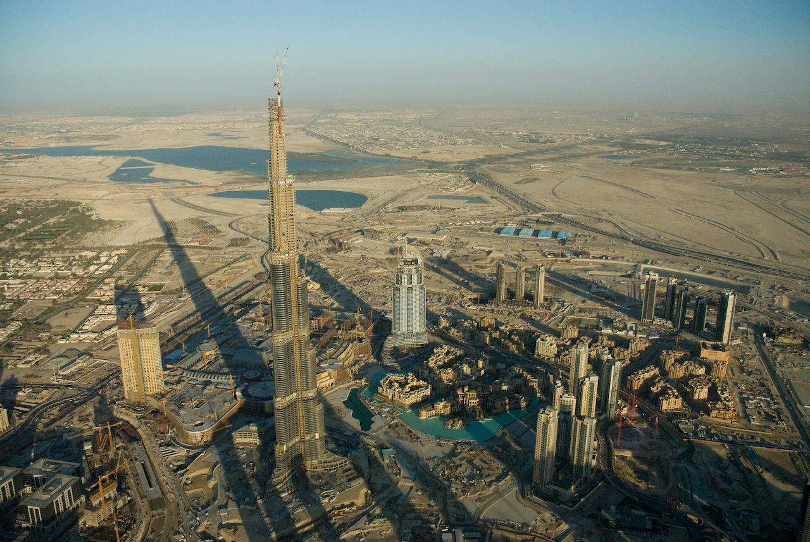

In the middle of Avenida Paulista, in São Paulo, Brazil, where every building rises upward, one of them lies flat in the air. The Assis Chateaubriand São Paulo Museum of Art, MASP, is a two-story box of concrete and glass, raised eight meters off the ground on four pillars. Beneath it, where columns would go, there is a plaza open to the city.
The design is by architect Lina Bo Bardi; the structural calculations, by engineer José Carlos de Figueiredo Ferraz. To clear a span of 70 or 74 meters, depending on the measurement, he used high-strength concrete developed during construction itself and a prestressing system of his own invention. The building was opened on 7 November 1968 by Queen Elizabeth II, and the 2018 conservation plan calls for the beams to be measured every six months, with no end date, to see how much they have sagged.
FACTSFact sheet
| Why | MASP, a private museum founded in 1947 by Assis Chateaubriand and Pietro Maria Bardi, occupied floors of the Diários Associados building, on Rua Sete de Abril, in downtown São Paulo, and soon needed a home of its own. The site chosen was that of the old Belvedere Trianon, demolished in 1951, facing Trianon Park and overlooking the valley of Avenida Nove de Julho. | 2+ sources |
|---|---|---|
| The site | The most repeated version says that Joaquim Eugênio de Lima donated the land to the city on the condition that the view from the belvedere be preserved, and that the free span was born of that requirement. Historian Daniele Pisani, in a 2019 book, argues that there was no donation and no clause: the lot was sold to the city by José Borges de Figueiredo, Lima's partner. | disputed |
| Design | Lina Bo Bardi (1914–1992). A block suspended 8 m above the ground, which turns the ground level into a public plaza, and a partly sunken block facing Avenida Nove de Julho.the start of the design is given as 1956, 1957 or 1958, depending on the source | 2+ sources |
| Structure | José Carlos de Figueiredo Ferraz (1918–1994), professor at the Polytechnic School and the School of Architecture and Urbanism (FAU) of the University of São Paulo. High-strength reinforced concrete and prestressing with the Ferraz System, with its own anchorage, one of the first Brazilian prestressing patents. | 2+ sources |
| How it stands | Four pillars of 2.5 × 4 m and two pairs of prestressed box girders, one at the roof and the other between the floors. The first floor hangs from the intermediate beams; the second, the Pinacoteca (picture gallery), rests on them.according to the structural conservation plan drawn up by the museum with the Getty Foundation in 2018 | 1 source |
| Who paid | The City of São Paulo, owner of the building and the land. Construction spanned the terms of mayors Ademar de Barros, Prestes Maia and Faria Lima.the municipal ownership is stated by the city government itself | 1 source |
| Cost | None of the sources consulted publishes how much the construction cost. | no record |
| Timeline | Construction began in 1958 or in 1960, depending on the source, with technical and financial difficulties and several stoppages. Opening on 7 November 1968, with Queen Elizabeth II and Prince Philip.the opening date is established; the start of construction varies | disputed |
| Workers | None of the sources consulted records how many people worked on the construction, either in total or at the peak. | no record |
| Deaths and accidents | None of the sources consulted records deaths or injuries during construction. | no record |
| Dimensions | A span of 74 m according to the museum's conservation plan and most of the press; 70 m according to a technical article in AU magazine (2014) and a 2015 academic study. Roof beams 78 m long with a cross-section of 2.5 × 3.5 m. Pillars 35.35 m in total height, 21.25 m above the plaza. | disputed |
| The beams that sagged | The upper beams deflected more than expected from the moment the shoring was removed, in 1968. In 1999 they were given a second prestressing, with four new cables inside each box girder. Monitoring continues.according to the structural conservation plan (2018) | 1 source |
| The red | Until 1990 the structure was bare concrete. To stop leaks running down the pillars and beams into the Pinacoteca, the external pillars and beams were painted with red waterproofing paint, a solution approved with Lina Bo Bardi.Lina's approval appears only in the museum's conservation plan (2018) | 2+ sources |
| Heritage listing | State (CONDEPHAAT) in 1982; municipal (CONPRESP) in 1991 or 1992; federal (IPHAN) in 2003 or 2008, depending on the source. The collection was listed by IPHAN in 1969. | disputed |
| Today | Restoration of the portal frames from April 2024 to April 2025. The Pietro Maria Bardi Building, a 14-story annex paid for with R$250 million in donations, opened on 28 March 2025. Underground passage between the two buildings opened on 11 September 2026. | 2+ sources |
01A museum in search of ground
MASP was born in 1947, in downtown São Paulo, on floors of the Diários Associados building, the newspaper and radio empire of Assis Chateaubriand. It was run by the Italian critic Pietro Maria Bardi, and the rooms and exhibitions were designed by his wife, the architect Lina Bo Bardi, who had arrived in Brazil in 1946. The museum grew quickly and needed a home.
That home ended up at the top of Avenida Paulista, on the site where the Belvedere Trianon had stood, a lookout designed by Ramos de Azevedo, opened in 1916 and demolished in 1951. From there one could see the valley of Avenida Nove de Julho, which runs through tunnels beneath the site, toward downtown. The same lot hosted the first São Paulo Biennial, in 1951, and was sought by Ciccillo Matarazzo's Museum of Modern Art, which went as far as commissioning a design from Affonso Eduardo Reidy that was never built.
According to the structural conservation plan drawn up by the museum, Lina began the design in 1957, and the construction, a municipal project, began in 1960; other sources say 1958.

02Letting the city pass underneath
Lina's idea was not to occupy the ground. The museum would be a two-story glass box, suspended eight meters above the sidewalk, and the ground level would stay free, like a covered plaza looking out over the valley. Below, fitted into the slope of the site, a second, partly sunken block would house auditoriums and exhibition rooms.
For a long time the story went that this free span was an obligation: Joaquim Eugênio de Lima, creator of Avenida Paulista, was said to have donated the land to the city on condition that the view from the belvedere be preserved. The story appears in books, on official websites and even in heritage-protection files. In 2019, historian Daniele Pisani published that there had been no donation and no clause: the lot was reportedly sold to the city by José Borges de Figueiredo, Lima's partner, and the version about the requirement was reportedly spread by Pietro Maria Bardi. If Pisani is right, the span was not imposed on Lina. It was her choice.

03Figueiredo Ferraz's calculations
To hold up the box with no columns in the middle, engineer José Carlos de Figueiredo Ferraz, who had been the city's secretary of public works, proposed two concrete portal frames. Each is formed by two pillars and a giant beam at the top, at roof level; a second pair of beams, between the floors, carries the floors. The span between the pillars is given as 74 meters in the museum's conservation plan and as 70 meters in a technical article in AU magazine, from 2014. The roof beams are 78 meters long, with a hollow cross-section of 2.5 by 3.5 meters.
The secret is prestressing: steel cables tensioned inside the concrete, which compress the beam and make it work against its own weight. According to the conservation plan, Ferraz could not use the French Freyssinet anchorage system and created his own, the Ferraz System, in which the wires loop around at the fixed end and come back through the same duct. The high-strength concrete was developed during construction and heated up so much as it set that the cable ducts also served to draw off heat.
According to the AU article, by Marcelo Suzuki and Roberto Rochlitz, the prestressing took several weeks, a little each day, on hundreds of cables, and shortened the beams by about five centimeters. So that they could move while being tensioned, one of the supports of each beam is hinged, with a pivot hidden inside the pillar.

04Eight meters above Paulista
The four pillars have a cross-section of 2.5 by 4 meters and a total height of 35.35 meters, of which 14.10 are underground, on footings of 12.5 by 9.5 meters. The first floor does not rest on the intermediate beams: it hangs from them on tie rods. The second, the Pinacoteca, sits on top of them, in a single hall without a single partition.
Construction was slow. The conservation plan mentions technical and financial difficulties and several stoppages, and a photo from the city archive, from November 1965, shows the upper block still entirely encased in the scaffolding of the shoring. How many workers passed through the site, how much the city spent and whether there were accidents, the sources consulted do not record.
The museum was opened on 7 November 1968 by Queen Elizabeth II, accompanied by Prince Philip, on her only visit to Brazil. In the Pinacoteca, the paintings were not on the walls: they floated on sheets of glass set into concrete blocks, Lina's glass easels.

05The beams that sagged, and the red
When the shoring was removed, in 1968, the upper beams dropped more than expected. The conservation plan attributes this to the original prestressing performing only partially. The deflection made water pool on the roof, and a 1987 inspection found deteriorated concrete in the beams and pillars. The roof was redone, but water kept getting in: it seeped through the porous concrete of the external beams and pillars, collected in the hollow space inside them and ran down into the Pinacoteca.
In 1990, the external structure was painted with red waterproofing paint, a solution that, according to the conservation plan, was approved with Lina Bo Bardi. One of the arguments was the existence of sketches by the architect showing the structure in red, an argument the conservation plan itself considers debatable. Either way, the red became the building's image.
In 1999, the firm that succeeded Figueiredo Ferraz carried out a second prestressing of the roof beams, with four new cables inside each box girder. On opening the beams, the technicians found the interior deteriorated and wooden formwork full of termites, left inside since construction. The glass easels left the Pinacoteca in 1996 and came back in 2015.
06Gray, red and a tunnel
In April 2024 the restoration of the portal frames began, which the museum described as the first significant one since the opening. The paint was stripped, the corroded reinforcement was treated, and for months Paulista saw MASP's frames in gray. The red returned from June onward, in an AkzoNobel paint named Vermelho MASP (MASP Red), and the restoration was delivered in April 2025.
In November 2024, the city, owner of the building and the land, granted the free span to the museum for 20 years. On 28 March 2025 the Pietro Maria Bardi Building opened, a neighboring building from the 1950s turned by the firm METRO Arquitetos into a 14-story annex, paid for with R$250 million in donations from private individuals. Lina's building came to bear her name.
On 11 September 2026, the museum opened the underground passage linking the two buildings. On its walls, Beatriz Milhazes created Pietrolina, a 98-meter work, with a 60-meter painting and reflective elements on a 38-meter wall. The building that Lina lifted off the ground to let the city pass underneath gained, 58 years later, a path beneath the earth, and the span is still free.
MYTHSWhat people say and what the record shows
- What people say
The free span exists because the donor of the land required that the view from the belvedere be preserved.
What the record showsIt is the most repeated version, including on official websites. Historian Daniele Pisani argues, in a 2019 book, that there was no donation and no clause: the land was sold to the city by José Borges de Figueiredo, and the story of the requirement was spread by Pietro Maria Bardi. Both versions are still in circulation.
- What people say
MASP was always red.
What the record showsFrom 1968 to 1990 the structure was bare concrete. The red came in 1990 as waterproofing paint, to stop leaks, with Lina Bo Bardi's approval, according to the conservation plan.
- What people say
It was the largest free span in the world when it opened.
What the record showsThe claim appears in encyclopedias and in the press, but none of the technical sources consulted supports it. What they establish is a span of 70 to 74 meters, depending on the measurement, exceptional for a suspended building in 1968.
- What people say
The whole museum rests on top of the beams.
What the record showsOnly partly. The second floor, the Pinacoteca, rests on the intermediate beams; the first hangs from them on tie rods, according to the structural conservation plan.
QUESTIONSFrequently asked questions
Who designed the MASP building in São Paulo?
Architect Lina Bo Bardi designed the building: a block suspended 8 m above the ground, which turns the ground level into a plaza, and another partly sunken one. The structural design is by engineer José Carlos de Figueiredo Ferraz, professor at the Polytechnic School and the School of Architecture and Urbanism (FAU) of the University of São Paulo.
When was MASP built?
Construction began in 1958 or in 1960, depending on the source, and faced technical and financial difficulties and several stoppages. The museum was opened on 7 November 1968 by Queen Elizabeth II, accompanied by Prince Philip.
How was the MASP free span built?
The museum sits on four pillars and two pairs of prestressed-concrete box girders, one at the roof and the other between the floors. Figueiredo Ferraz used high-strength concrete developed during construction and a prestressing system of his own invention, the Ferraz System; the first floor hangs from the beams on tie rods.
How long is the MASP free span?
The measurements differ: 74 m according to the museum's conservation plan and most of the press, 70 m according to a technical article in AU magazine, from 2014. The suspended block sits 8 m above the plaza.
Why is MASP red?
Until 1990 the structure was bare concrete. That year, the external pillars and beams were painted with red waterproofing paint to stop leaks running down into the Pinacoteca, a solution approved with Lina Bo Bardi, according to the museum's conservation plan.
Episode in production
Every week, a structure that should never have stayed standing.

Burj Khalifa
Downtown Dubai, Dubai, United Arab Emirates · 2004–2010Raise 828 meters of concrete and steel on weak rock and groundwater saltier than the sea, in a 50 °C desert, against a wind that, at that height, would set swaying any shape that repeated itself floor after floor.
Read the story →MORERead next
SOURCESSources
- Silvio Oksman (coord.) and the Getty-MASP team, "Plano de Conservação da Estrutura do MASP", Getty Foundation, Keeping It Modern program, 2018 — getty.edu
- Marcelo Suzuki and Roberto Rochlitz, "A estrutura do Masp, de Lina Bo Bardi", AU magazine, no. 249, 2014 (reproduced by IAB-TO) — iabto.blogspot.com
- Rita Casaro, "Masp, uma singular obra de arte da engenharia", Jornal do Engenheiro (SEESP), no. 522, 2018 — seesp.org.br
- FGV-CPDOC, entry "José Carlos de Figueiredo Ferraz", Dicionário Histórico-Biográfico Brasileiro — www18.fgv.br
- Stephen Mark Caffey and Gabriela Campagnol, "Dis/Solution: Lina Bo Bardi's Museu de Arte de São Paulo", Journal of Conservation and Museum Studies, 2015 — jcms-journal.com
- Daniele Pisani, "O Trianon do MAM ao Masp: arquitetura e política em São Paulo (1946–1968)", Editora 34, 2019
- Folha de S.Paulo, "Historiador revela mentira sobre vão-livre do Masp antes da construção do museu", 9 July 2019 (reproduced by Fórum Permanente) — forumpermanente.org
- City of São Paulo, "Prefeitura concederá vão-livre do Masp ao próprio museu por 20 anos para atividades culturais", 12 November 2024 — prefeitura.sp.gov.br
- Court of Accounts of the Municipality of São Paulo, "MASP" — lgpd.tcm.sp.gov.br
- Poder360, "Rainha Elizabeth inaugurou prédio do Masp na Avenida Paulista", 9 September 2022 — poder360.com.br
- Correio Braziliense, "Como foi construído o vão livre do Masp" — correiobraziliense.com.br
- IstoÉ Dinheiro, "Masp abre mão do vermelho durante restauro do prédio de Lina Bo Bardi", 23 April 2024 — istoedinheiro.com.br
- Cimento Itambé, "MASP realiza o maior projeto de restauro desde a sua inauguração", 15 May 2024 — cimentoitambe.com.br
- CNN Brasil, "Cor vermelha volta a fazer parte da fachada do Masp", 10 June 2024 — cnnbrasil.com.br
- Folha do ABC, "MASP entrega restauro dos pórticos com sistema de pintura da AkzoNobel", 20 April 2025 — folhadoabc.com.br
- Elle Brasil, "New MASP building will open to the public in March 2025" (in Portuguese), 26 November 2024 — elle.com.br
- Cidade de São Paulo, "MASP inaugura novo edifício Pietro Maria Bardi e expõe Cinco Ensaios sobre o MASP", 2025 — cidadedesaopaulo.com
- Portal Tela, "MASP inaugura túnel subterrâneo com instalação de quase 100 metros", 10 September 2026 — portaltela.com
- Portal Democrata, "Masp abre nova passagem subterrânea na Avenida Paulista", 11 September 2026 — portaldemocrata.com.br
- Revista Business, "Beatriz Milhazes transforma passagem do MASP em obra imersiva de 98 metros na Avenida Paulista", 17 September 2026 — revistabusiness.com.br
- Wikipedia (Portuguese), "Museu de Arte de São Paulo" (starting point) — pt.wikipedia.org
Images
- Fig. 01 — MASP seen from Avenida Paulista in 2017: the suspended block, the red portal frames and the open plaza below: Mike Peel · CC BY-SA 4.0
- Fig. 02 — Avenida Paulista on a postcard from around 1923, with the Belvedere Trianon on the left, on the site where MASP stands today: Autor não identificado · Public domain
- Fig. 03 — The construction in November 1965: the upper block still entirely encased in the scaffolding of the shoring: Autor não identificado (Arquivo Histórico de São Paulo, Prefeitura de São Paulo) · Public domain
- Fig. 04 — Beneath the suspended block, in 2013: the plaza of the free span, without a single column until the pillars on the far side: Harry Wood · CC BY-SA 2.0
- Fig. 05 — MASP and the Pietro Maria Bardi Building, the 14-story annex, in February 2025, weeks before it opened: Mauro Cateb · CC BY-SA 4.0